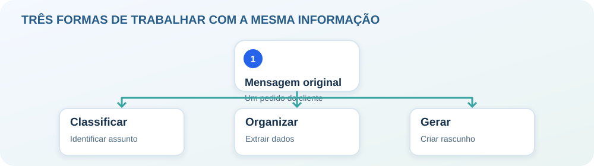

Diferenciar IA que classifica de IA que cria e testar no Gemini.
Entenda o exemplo
A IA generativa produz conteúdo novo: texto, resumo, ideias, imagens.
Calculadora × oficina criativa: uma devolve um resultado exato, a outra propõe rascunhos.
Uma informação, vários públicos
A Café Horizonte vai abrir no sábado das 8h às 12h. É preciso avisar clientes no Instagram, no WhatsApp e por um pequeno cartaz.
O que observar: O horário é um fato. O texto pode mudar conforme o canal, mas o fato não.
A analogia do redator
Um redator recebe as mesmas informações e adapta a maneira de contar a novidade. A IA generativa faz algo semelhante: cria versões de conteúdo a partir de instruções.
O que observar: Criar um texto novo não é a mesma coisa que conferir se a informação é verdadeira.
Demonstre no Gemini
Peça três formas diferentes de apresentar o horário, com linguagem adequada a cada canal.
O que observar: Compare o tom dos textos e confirme que “8h às 12h” aparece corretamente.
O que conferir antes de divulgar
Uma mensagem bonita pode ser inadequada se trouxer promoção, entrega ou endereço que não foram informados.
O que observar: Revisão obrigatória: horário correto, tom adequado e ausência de informações inventadas.
Tente em outro negócio
Uma papelaria fechará mais cedo na sexta-feira, às 16h. Crie um aviso para a porta e uma mensagem de WhatsApp sem acrescentar motivos não informados.
O que observar: Os dois textos comunicam o mesmo fato com formatos diferentes?

PRÁTICA
Experimente no Gemini
Rode o mesmo recado em três transformações: resumir, organizar, reformular. Depois compare duas ferramentas.
A Café Horizonte abrirá neste sábado, das 8h às 12h. Usando SOMENTE esse fato, crie: (1) uma legenda para Instagram; (2) uma mensagem breve de WhatsApp; (3) um cartaz de até 12 palavras. Não invente promoções, endereços ou entregas.
Escreva um aviso de 40 palavras dizendo que a Café Horizonte fecha mais cedo na sexta por manutenção. Tom acolhedor. Não invente horário.